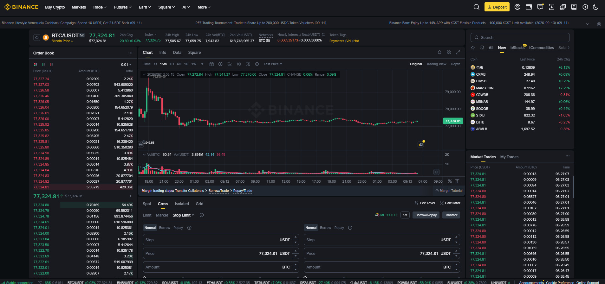

Margin Trading = بائننس سے قرض (Loan) لے کر اپنی ٹریڈنگ ہولڈنگ سے بڑی پوزیشن بنانا۔ یہ Spot سے آگے کا قدم ہے، مگر اس میں Liquidation (جبری بندش) کا حقیقی خطرہ موجود ہے۔ یہ باب آپ کو Cross اور Isolated Margin، سود (Interest)، اور Liquidation کی مکمل حقیقت سمجھائے گا۔
⚠️ یہ اعلیٰ خطرے والا فیچر ہے — صرف تجربہ کار صارفین کے لیے۔ پہلے Spot مکمل سیکھیں۔

Margin Trading = آپ اپنے اکاؤنٹ کی ضمانت (Collateral) پر بائننس سے رقم یا کوائن قرض لیتے ہیں، اور اُس سے بڑی ٹریڈ کرتے ہیں۔ بعد میں قرض سود کے ساتھ واپس کرنا ہوتا ہے۔
آپ کا سرمایہ (Collateral) : 1,000 USDT
قرض (Borrow) : 4,000 USDT
کل ٹریڈنگ پاور : 5,000 USDT (4x leverage)| سمت | عمل | توقع |
|---|---|---|
| Margin Long | USDT قرض لے کر BTC خریدیں | قیمت بڑھے گی |
| Margin Short | BTC قرض لے کر فوراً بیچیں | قیمت گرے گی، سستی پر واپس خرید کر قرض چکائیں |
| پہلو | Spot | Margin |
|---|---|---|
| قرض | نہیں | ✅ ہاں (سود کے ساتھ) |
| سمت | صرف Buy (Long) | Buy (Long) + Sell (Short) |
| خطرہ | سرمایہ محدود | Liquidation تک |
| مقصد | حقیقی ملکیت | قرض پر بڑی پوزیشن |
| فیس | Maker/Taker | Maker/Taker + Interest |
💡 Spot پر B01 Long بھی ممکن ہے (بہت کم لیوریج، خاص جوڑے) — مگر یہ باب عام Margin Trading کے بارے میں ہے۔
آپ کا پورا Margin اکاؤنٹ = مشترکہ Collateral
اگر کسی ایک پوزیشن کو نقصان ہو → پورا اکاؤنٹ اُسے سہارا دیتا ہے
مگر اگر نقصان بہت بڑا ہو → پورا اکاؤنٹ Liquidation کے قریب
مثال:
سرمایہ : 1,000 USDT
پوزیشن : 5,000 USDT (5x)
اگر منافع : پورا اکاؤنٹ بڑھتا ہے
اگر نقصان : پورا اکاؤنٹ متاثر، Liquidation سب پر اثرہر پوزیشن کے لیے الگ سے سرمایہ مقرر
نقصان بڑھے تو صرف اُس پوزیشن کا سرمایہ ختم ہوتا ہے
باقی اکاؤنٹ بالکل محفوظ رہتا ہے
مثال:
سرمایہ : 1,000 USDT (کل)
Isolated Margin : 100 USDT اس پوزیشن کے لیے
پوزیشن : 500 USDT (5x)
نقصان: 100 USDT → صرف یہ پوزیشن Liquidation
باقی 900 USDT محفوظ رہا ✅| قسم | مناسب کب | خطرہ |
|---|---|---|
| Cross Margin | تجربہ کار، متعدد پوزیشنوں کا انتظام | پورا اکاؤنٹ خطرے میں |
| Isolated Margin | نئے صارف، خطرہ محدود رکھنا | صرف ایک پوزیشن |
💡 مشورہ: شروع میں Isolated Margin استعمال کریں — نقصان ایک حد پر رکتا ہے۔
قدم 1: Trade ▼ → Margin کھولیں اور جوڑا منتخب کریں (مثلاً BTC/USDT)
قدم 2: Isolated یا Cross منتخب کریں (شروع میں Isolated)
قدم 3: لیوریج سیٹ کریں (شروع میں 2x–3x)
قدم 4: Borrow سے قرض لیں — جو سمت اختیار کرنی ہے، اُس کے مطابق:
قدم 5: قرض شدہ رقم سے ٹریڈ کریں (بائننس خودکار طور پر اکاؤنٹ میں شامل کرتا ہے)
قدم 6: پوزیشن بند کر کے Repay سے قرض سود کے ساتھ واپس کریں
💡 بائننس خودکار طور پر موجودہ بیلنس، قرض (Borrowed)، اور روزانہ/گھنٹہ سود (Interest Accrued) دکھاتا ہے۔
Margin پر قرض پر Interest عائد ہوتا ہے جو عام طور پر گھنٹہ یا دن کی بنیاد پر لگتا ہے، اور مارکیٹ کے مطابق بدلتا رہتا ہے۔
قرض : 1,000 USDT
روزانہ شرح : 0.02% (فرضی؛ اصل شرح مارکیٹ کے مطابق بدلتی ہے)
ایک دن کا سود: 1,000 × 0.02% = 0.20 USDT
30 دن کا سود: 0.20 × 30 = 6.00 USDT| پہلو | وضاحت |
|---|---|
| شرح | کوائن اور مارکیٹ کے مطابق بدلتی ہے (Tier نظام) |
| وقت | قرض جاری رہے جتنی دیر، سود چلتا رہے |
| اضافی | ٹریڈنگ فیس (Maker/Taker) الگ سے |
⚠️ سود طویل عرصے تک قرض رکھنے پر منافع کو کھا سکتا ہے۔ منصوبہ مختصر مدت کا رکھیں۔
جب آپ کی ضمانت (Collateral) قدر کافی نہ رہے، تو بائننس آپ کی پوزیشن خودکار طور پر بند کر دیتا ہے (قرض وصول کرنے کے لیے)۔
| لیوریج | قیمت میں معمولی کمی | نتیجہ |
|---|---|---|
| 2x | تقریباً 50% | Liquidation بہت دور |
| 5x | تقریباً 20% | درمیانہ خطرہ |
| 10x | تقریباً 10% | خطرہ زیادہ |
تخمینہ (Long):
Liquidation Level ≈ Entry × (1 − 1/Leverage)
فرضی مثال: Entry $96,000، 5x → Liquidation ≈ $96,000 × 0.8 ≈ $76,800
(اصل قیمت Maintenance Margin، فیس اور مارکیٹ کے حساب سے بدلتی ہے)| فیچر | Margin | Futures |
|---|---|---|
| قرض کی نوعیت | USDT/BTC/دیگر قرض | کنٹریکٹ پوزیشن |
| مقام | Spot مارکیٹ میں ٹریڈ | Futures مارکیٹ |
| کم از کم لیوریج | عموماً 3x–10x (جوڑے پر منحصر) | 1x سے 125x تک |
| لاگت | Interest (سود) | Funding Rate |
| میعاد | کوئی نہیں (سود چلتا ہے) | Perpetual/Quarterly |
| خطرہ | اعلیٰ | بہت اعلیٰ |
| مالکیت | عارضی (قرض) | نہیں (کنٹریکٹ) |
سیکھنے کی صحیح ترتیب: Spot → Margin → Futures۔ ہر قدم پچھلے کی سمجھ پر کھڑا ہے۔
مرحلہ 1: Margin سیکشن کھولیں اور BTC/USDT منتخب کریں
مرحلہ 2: Isolated Margin منتخب کریں
مرحلہ 3: لیوریج 2x رکھیں
مرحلہ 4: تھوڑا USDT قرض لیں، پھر تھوڑی سی BTC خریدیں (Long)
مرحلہ 5: فوراً SL لگائیں (محفوظ فاصلے پر)
مرحلہ 6: قرض Repay کریں اور سود + نتیجہ نوٹ کریں
Margin ایک طاقتور اوزار ہے — جیسے تیز چاقو: صحیح ہاتھ میں بہترین، غلط استعمال میں زخم۔ قرض لینا آسان ہے، مگر سود اور Liquidation کی حقیقت سخت ہے۔
کم لیوریج، Isolated Margin، ہر ٹریڈ پر SL، اور Demo پر مشق — یہ چار اصول آپ کو Margin کی تباہی سے بچائیں گے۔